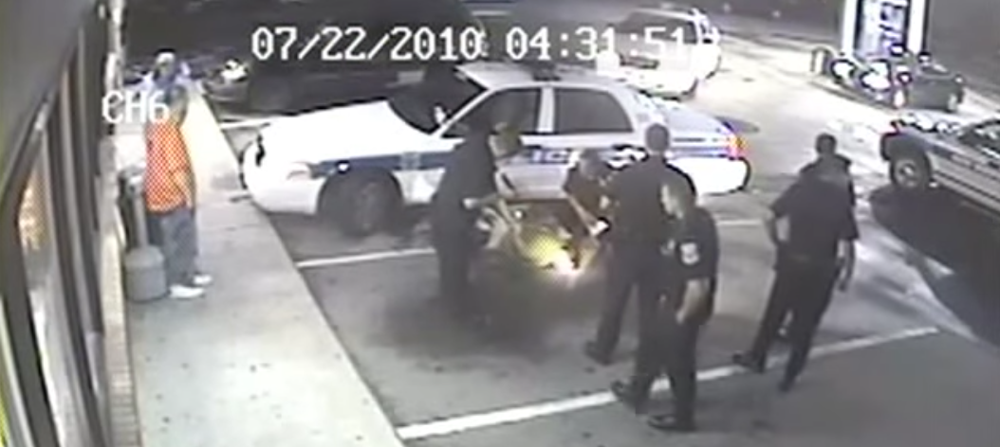

2020-09-07 08:00
Police Accountability legislation, which was expected to die in the Massachusetts legislature this Summer, has been given a surprising reprieve. In the wake of George Floyd’s asphyxiation murder by a Minneapolis cop, while three others stood around watching Floyd die, the Massachusetts House has been unable to pursue its usual tactics of deep-sixing progressive legislation. Members of a conference committee are still hammering out differences between a thoughtful Senate version of the Reform, Shift + Build Act and a toothless House version apparently edited by police unions.
Police unions have lobbied hard to neuter any legislation for reining in police excesses. They don’t appreciate being held accountable to the public — or to courts — for the felonious assaults and murders committed while on duty. Unions object to limits on “Qualified Immunity,” bans on chokeholds and no-knock warrants, and are only truly happy when legislators offer them more cash for “training” intended to make them sweeter, gentler souls — but never to hold them accountable by discipline or termination.
Angry that such legislation was ever filed in the first place, Boston Police Patrolman Association President Lawrence Calderone said, “Angry would be an understatement.” And dismissing the need for legislation, Calderone added, “We’re angry about it. Boston, Massachusetts in general is not Minneapolis.” State Senator Ryan Fattman echoed the sentiment, saying that Massachusetts cops aren’t like bad cops elsewhere: “… our Massachusetts law enforcement officers are the best trained, well educated, and well-meaning in our nation, bar none. […] The egregious sins of other law enforcement in other parts of our country should not be their burden to bear.”
This is, of course, absolute nonsense. Massachusetts has plenty of police abuse horror stories. Most recently, in July 2020, the U.S. Department of Justice concluded an investigation of the Springfield Police Department’s Narcotics Bureau. Undercover police in Springfield were routinely beating suspects about the head, using immediate force without identifying themselves as police, and routinely lying in statements and in court.
Closer to home, where people are still calling for the release of details on Malcolm Gracia’s killing — the details of which are subject to a gag order related to the City’s $500,000 settlement with the Gracia family — we only have to look back two years earlier to find a case similar in many ways to George Floyd’s murder in Minneapolis.
No, Massachusetts is exactly like Minnneapolis. We have a breathing problem in New Bedford too.
* * *
At about 4:17 am the morning of July 22, 2010 Erik Aguilar, 42, walked into the New Bedford XtraMart gas and convenience store and asked for help. Aguilar said someone was about to kill him. The store clerk called police for help. The store’s security footage captured Aguilar’s subsequent killing by one officer and a civilian, and the contempt for human life shown by five more officers who arrived on the scene and did nothing to try to revive Aguilar.
https://www.youtube.com/watch?v=XV2iyIPwgBI
Seven minutes after entering the XtraMart Aguilar exits the store and is seen wandering around the parking lot when Officer Paul Hodson arrives. At 4:25:28, with the store clerk looking on, Hodson gets out of his car, playing with his baton, wedging Aguilar between himself and his cruiser. Hodson reaches into Aguilar’s pockets and conducts some sort of inspection. Aguilar looks uneasy, as if he is about to run off.
At 4:26:40 — only slightly over a minute after arriving — Hodson grabs Aguilar by the arm and wheels him around onto the hood of the police vehicle. Aguilar, who has committed no crime, resists. At 4:27:29 Hodson pepper-sprays Aguilar in the face after taking him down onto the pavement. At 4:27:41 Hodson flips a handcuffed Aguilar onto his stomach and both Hodson and a civilian passer-by kneel on Aguilar’s back with his face pressed into the pavement. From about 4:27:48 forward in the video the civilian can be seen kneeling on Aguilar’s neck. For the next minute we see Aguilar’s legs move a little, then his struggling ceases at about 4:29:44.
Aguilar is either dying or is already dead.
At around 4:29:57 a second officer shows up. He looks at Aguilar’s immobile body. Hodson and the civilian release their hold on Aguilar, though Hodson keeps kneeling on him. At 4:31:28 three more officers show up and the civilian leaves. A sixth officer appears. Not one of them at any point makes any effort to resuscitate Aguilar. At 4:33:36 Hodson stands up. He has been kneeling on Aguilar for a full seven minutes.
For the next 18 minutes the five officers stand around talking. At 4:51:40 an ambulance finally pulls up in front of the XtraMart. At 4:54:09 Aguilar’s body is placed in the ambulance. At 5:09:03 the ambulance leaves the convenience store. At 5:11:52 the last of the police cruisers leaves the scene.

* * *
Attorney Howard Friedman, who previously took on the NBPD in the case of Morris Pina, filed a lawsuit, naming five of the stand-about officers as defendants: Paul Hodson, Antonio Almeida, Damien Vasconcelos, Roberto DaCunha and John Martins.
The usual machinations of the state kicked in to exonerate the officers. Former Hampden County District Attorney William Bennett was tasked with an “independent” investigation. Bennett concluded that alcohol and cocaine were responsible for Aguilar’s death. However, he did note that “the failure to detect that Aguilar needed immediate medical care and the miscommunication and time wasted waiting for a van that never arrived are troubling circumstances of this tragic loss of life.”
Police Chief Provencer refused comment, as did City Solicitor Markey — three separate times. And Mayor Jon Mitchell — about to become a recurring fixture in New Bedford police abuses cases — refused to talk to the press. No one wanted to take responsibility, especially city officials.
The Bennett report — to the surprise of no one — did not recommend prosecution. Jon Mitchell, apparently satisfied that no one would have to take the heat, issued a statement: “New Bedford residents can take confidence in knowing that the New Bedford Police Department will demand that its officers hold themselves to the highest standards of professionalism and respect for our citizens now and in the future.”
Bennett’s report was naturally seen as a betrayal by Aguilar’s family : “We are not surprised that Mr. Bennett did not recommend criminal prosecution of the police officers. Police officers are almost never charged with crimes. The video shows the officers disregarded police policies. The police were called to provide assistance. Eric needed immediate medical attention. Instead of providing care, the police officers left Eric handcuffed lying face down on the ground. They finally provided emergency medical care after it was too late to help. We believe the police officers violated Eric’s civil rights.”
Strangely enough, the New Bedford Police Department — not the police union — agreed with the Aguilar family. Lieutentant Robert Aguiar [no relation] of the New Bedford Police Department’s Division of Professional Standards wrote, “I would classify this event as a tragedy for the family of Erik Aguilar, an embarrassing disgrace to the New Bedford Police Department, and a case of absolute negligence on the part of the … police officers on scene, as well as their supervisor Lieutenant Michael Jesus. [… They]”had the training, the duty and the obligation as police officers to help and protect Erik Aguilar, and they undeniably failed to do so." An internal investigation recommended disciplinary action, though not termination, for seven officers involved in the Aguilar case. Their slap on the wrist — four day suspensions.
The New Bedford Police Department’s Divison of Professional Standards maintains a spreadsheet of case files which the NAACP New Bedford was finally able to obtain. In it, Officer Hodson, appears twice in June 2019.
Neither lawsuits, video, nor even the Police Department’s own disciplinary mechanisms were enough to get rid of the bad apples, much less punish them meaningfully. Officer John Martins left the New Bedford Police Department in 2012 after being charged with drunk driving and leaving the scene of an accident. The rest stayed on the force after receiving their four-day suspensions.
It wasn’t until December 18, 2019 that Hodson pled guilty — in the United States Attorney’s office in the District of Massachusetts — and not for klling Aguilar, but for the distribution of child pornography.
Hodson is now serving a sentence of five to twenty years in federal prison.